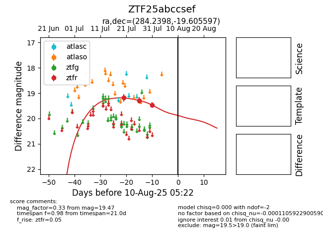

Target ZTF25abccsef at 2025-08-10 05:22, see:
FINK: fink-portal.org/ZTF25abccsef
Lasair: lasair-ztf.lsst.ac.uk/objects/ZTF25abccsef
ALeRCE: alerce.online/object/ZTF25abccsef
alt names
ZTF25abccsef (ztf,fink)
coordinates:
equatorial (ra, dec) = (284.2398,-19.60560)
galactic (l, b) = (15.9119,-9.97387)
photometry
last ztfr=19.47
3 ztfr detections
